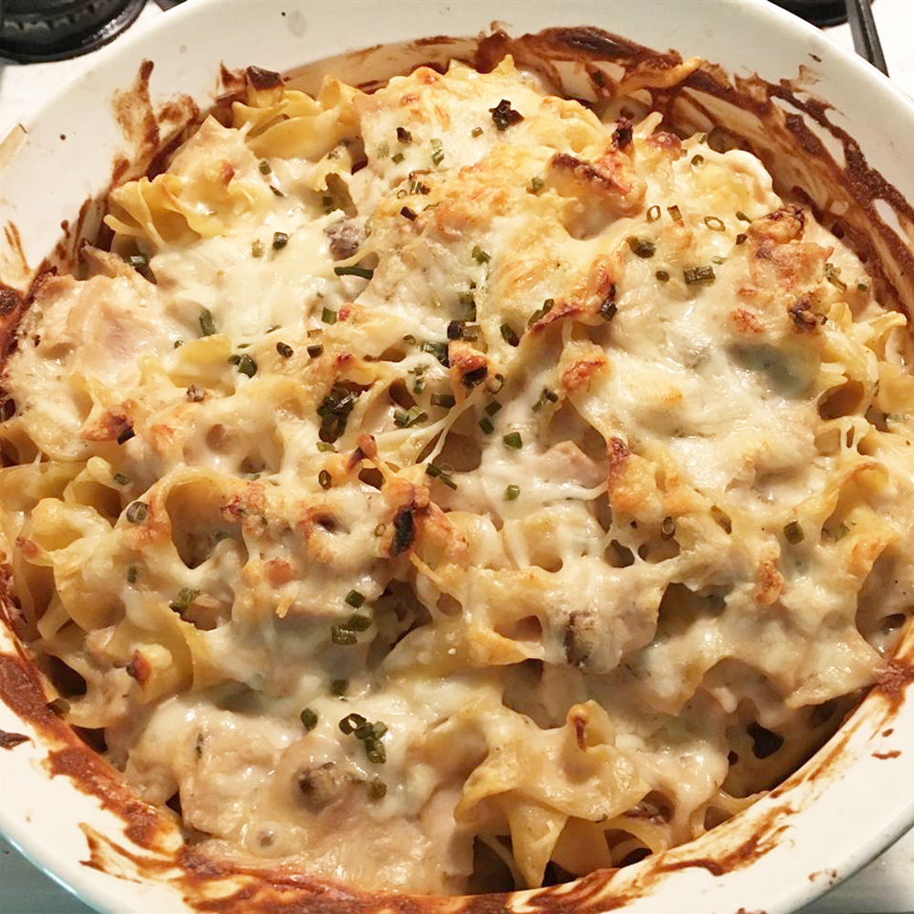

Easy Turkey Tetrazzini

(Original)
Description
Turkey Tetrazzini is a quick and easy way to turn leftover turkey into a family favorite.
Ingredients
- 1 (8 oz) package egg noodles
- 2 tbsp butter
- 1 (6 oz) can sliced mushrooms
- 2 cups chopped cooked turkey
- 1 (10.75 oz) can condensed cream of celery soup
- 1 cup sour cream
- 1 tsp salt
- 0.125 tsp pepper
- 0.5 cups grated Parmesan cheese
Steps
- Bring a large pot of lightly salted water to a boil. Add noodles and cook until al dente, 8 to 10 minutes.
- Preheat the oven to 375 degrees F (190 degrees C).
- Meanwhile, melt butter in a large heavy skillet. Drain mushrooms, add to skillet, and cook, stirring, for 1 minute. Stir in turkey, condensed soup, sour cream, salt, and pepper.
- Drain noodles and place in a 9x13-inch baking dish. Pour turkey mixture evenly over the top. Sprinkle with Parmesan.
- Bake in the preheated oven until sauce is bubbling, 20 to 25 minutes.
(Back)